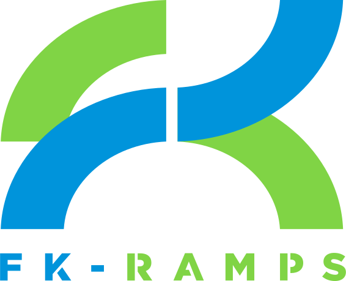
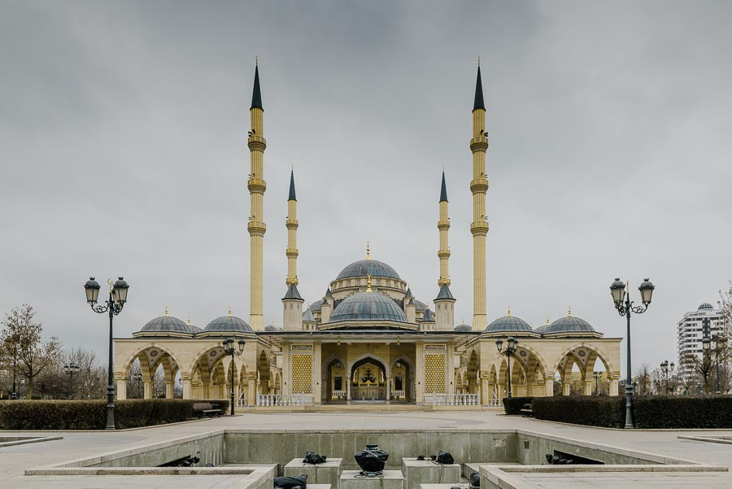
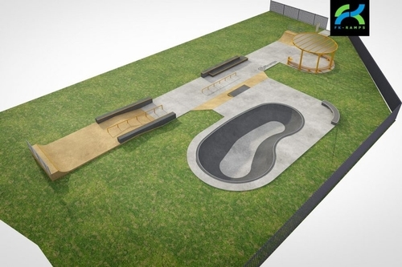

<!DOCTYPE html>
<html>
  <head>
    <title>FK - ramps</title>
    <meta name="viewport" content="width=device-width, initial-scale=1.0">
    <link rel="stylesheet" href="css/libs.min.css">
    <link rel="stylesheet" href="css/style.css">
  </head>
</html>
<body>
  <header>
    <nav class="main-navigation">
      <div class="container">
        <div class="row">
          <div class="col-xs-12 no-padding-l">
            <div class="nav-wrapper"><a class="logo">Logo</a>
              <ul>
                <li><a>Портфолио</a></li>
                <li><a>Каталог</a>
                  <ul>
                    <li><a>Скейт</a></li>
                    <li><a>Скейт</a></li>
                    <li><a>Скейт</a></li>
                    <li><a>Скейт</a></li>
                  </ul>
                </li>
                <li><a>Услуги</a></li>
                <li><a>Магазин</a></li>
                <li><a>Блог</a></li>
                <li><a>О нас</a></li>
                <li><a>Контакты</a></li>
              </ul>
              <div class="button-wrapper"><a class="download-button"><span>Скачать буклет</span></a></div>
            </div>
          </div>
        </div>
      </div>
    </nav>
    <div class="sub-navigation">
      <div class="container">
        <div class="row">
          <div class="col-xs-6 col-xs-offset-1">
            <div class="breadcrumbs"><a>FK-Ramps</a>><a>Блог</a>><a>Скейтпарк в каждый двор</a>><span>4 шага на встречу мечте. Как построить скейтпарк</span></div>
          </div>
          <!--.col-sm-1.sub-menu-->
          <!--  a Рубрика-->
          <!--  ul-->
          <!--    li-->
          <!--      a Видео-->
          <!--    li-->
          <!--      a Команда-->
          <!--    li-->
          <!--      a Производство-->
          <!--.col-sm-1.sub-menu-->
          <!--  a Сезон-->
          <!--  ul-->
          <!--    li-->
          <!--      a Сезон 1-->
          <!--    li-->
          <!--      a Сезон 2-->
          <!--    li-->
          <!--      a Сезон 3-->
          <!--.col-sm-3-->
        </div>
      </div>
    </div>
  </header>
  <main>
    <div class="container no-padding main">
      <div class="row">
        <div class="col-xs-10 col-xs-offset-1">
          <h1>4 шага навстречу мечте. Как построить скейт парк и кататься там с удовольствием?</h1>
          <p class="text-p">Мы постоянно слышим просьбы о строительстве скейт парков со всех концов страны. Сегодня мы постараемся ответить на ваши частые вопросы, поэтому подготовили инструкцию к действию для инициативных экстремалов. Что делать, куда идти и что говорить, если вы хотите, чтобы в вашем городе построили или отремонтировали скейт-парк? Для начала стоит разобраться, как обычно происходит строительство экстрим-инфраструктуры в нашей стране.</p>
          <div class="image-article"><span class="image-description">Команда DC-Russia на открытии первого бетонного скейтпарка Петербурга</span></div>
          <p class="text-p">Мы постоянно слышим просьбы о строительстве скейт парков со всех концов страны. Сегодня мы постараемся ответить на ваши частые вопросы, поэтому подготовили инструкцию к действию для инициативных экстремалов. Что делать, куда идти и что говорить, если вы хотите, чтобы в вашем городе построили или отремонтировали скейт-парк? Для начала стоит разобраться, как обычно происходит строительство экстрим-инфраструктуры в нашей стране.</p>
          <div class="text-quote">
            <div class="first-row">Самый частый вопрос:</div>
            <div class="second-row">«Как нам добиться строительства скейт-парка?»</div>
          </div>
          <h2 class="h2">В вашем городе никогда не было скейтпарка?</h2>
          <p class="text-p">Эффективность сбора подписей зависит от локации. Входные группы торговых центров, кинотеатров и других мест притяжения горожан с хорошей проходимостью станут удачным выбором места сбора подписей. Не забудьте взять с собой скейты, самокаты и велики, распечатайте фотографии будущего скейтпарка. Дайте людям понять, чего вы хотите. Не бойтесь общаться с прохожими, ведь вы заняты общественно-полезным делом, вы хотите улучшить качество жизни в вашем городе! По возможности, попросите заинтересованных горожан высказать свое мнение о вашей инициативе строительства скейт парка на камеру. Это поможет вам доказать актуальность собранных подписей в администрации города. Если всё было сделано правильно, то уже до момента сбора подписей руководители города будут в курсе вашей инициатирвы.</p>
          <p class="text-p">Этой статьей мы открываем цикл публикаций для инициативных райдеров. В следующий раз мы расскажем о взаимодействии с чиновниками на предпроектных стадиях согласования вашей инициативы и будем рады ответить на возникшие вопросы в нашей группе вконтакте.</p>
        </div>
      </div>
      <div class="row">
        <div class="col-xs-12">
          <h4> Поделиться этой статьей в соц. сетях</h4>
        </div>
      </div>
      <div class="row">
        <div class="col-xs-9">
          <div class="breadcrumbs"><a>FK-Ramps</a>><a>Блог</a>><a>Скейтпарк в каждый двор</a>><span>4 шага на встречу мечте. Как построить скейтпарк</span></div>
        </div>
        <div class="col-xs-3">
          <div class="data-publish">Дата публикации: 2018.03.04</div>
        </div>
      </div>
    </div>
  </main>
  <div class="teasers-section">
    <div class="container">
      <div class="row d-flex">
        <div class="col-xs-3 teaser">
          <div class="img-section"></div>
          <div class="description-section"><a>Как построить байк парк? 5 секретов успешного проекта</a></div>
        </div>
        <div class="col-xs-3 teaser">
          <div class="img-section"></div>
          <div class="description-section"><a>Как построить байк парк? 5 секретов успешного проекта</a></div>
        </div>
        <div class="col-xs-3 teaser">
          <div class="img-section"></div>
          <div class="description-section"><a>Дизайн скейтпарков. daniel yabar для kingpinmag.com</a></div>
        </div>
        <div class="col-xs-3 teaser">
          <div class="img-section"></div>
          <div class="description-section"><a>4 шага навстречу мечте. Как построить скейт парк и кататься там с удовольствием</a></div>
        </div>
      </div>
    </div>
  </div>
  <footer class="footer">
    <div class="container">
      <div class="row top-footer">
        <div class="col-sm-2"></div>
        <div class="col-sm-7 no-padding">
          <div class="buttons-section"><a>Гос-заказчикам</a><a>Бизнесу</a><a>Райдерам</a></div>
          <div class="footer-nav"><a>Портфолио</a><a>Каталог</a><a>Услуги</a><a>Магазин</a><a>О нас</a><a>Блог</a><a>Контакты</a></div>
        </div>
        <div class="col-sm-3 phones">
          <div class="phone-heading">Головной офис в Санкт-Петербурге</div>
          <div class="phone"><a href="tel:+7(812)4385550">+7 (812) 438 55 50</a></div>
          <div class="phone-heading">Для звонков по России  БЕСПЛАТНО</div>
          <div class="phone"><a href="tel:88003502203">8 800 350 22 03</a></div>
        </div>
      </div>
      <div class="row bottom-footer">
        <div class="col-sm-3">
          <p class="footer-text">© 2005 - 2016 ООО “ЭФКЕЙ-РАМПС”<br>Политика конфеденциальности<br>Все материалы, размещенные на сайте, <br>принадлежат компании FK-ramps.</p>
        </div>
        <div class="col-sm-2">
          <p class="footer-text">ООО "ЭФКЕЙ-рампс"<br>ОГРН 1174704007444<br>ИНН 4703150279<br>КПП 470301001</p>
        </div>
        <div class="col-sm-2">
          <p class="footer-text">ООО "Федераль"<br>ОГРН 1107847089954<br>ИНН 7806429119<br>КПП 780601001</p>
        </div>
        <div class="col-sm-2">
          <p class="footer-text">195248, &nbsp;г. Санкт-Петербург,<br>шоссе Революции, д.84 лит. Я<br>Пн-Сб: 9.00 - 19.00 (по Москве)<br>Вс: выходной</p>
        </div>
        <div class="col-sm-3"></div>
      </div>
    </div>
  </footer>
</body>